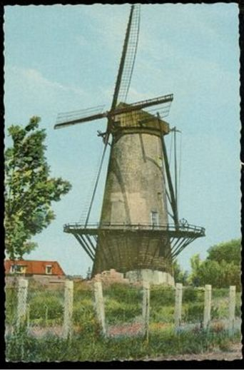

Maassluis: bestaande molens
In oude ansichten

 De Hoop 1 |
 de Hoop 12 |
 De Hoop 3 |
 De Hoop 4 |
 De Hoop 5 |
 De Hoop 6 |
 De Hoop 7 |
 De Hoop 8 |
 De Hoop 9 |
 De Hoop 10 |
 De Hoop 29-8-1940 |
 Het gevlucht is afgebroken nadat de voering om het bovenwiel is opgestroopt? Het gevlucht ligt op straat 2-9-1963 |
 De Hoop 2-9-1963 |
 De Hoop 2-9-1963 |
 De Hoop 11. |
.  De Hoop 1960 |
|
 De Hoop. |
 De Hoop. |
 De Hoop 1909 |
 De Hoop ca 1942 |
 De Hoop. |
 De Hoop. |
 De Hoop. |
 De Hoop |
 De Wippersmolen 1 |
 De Wippersmolen 2 |
 De Wippersmolen 3 |
 De Wippersmolen 4 |
 De Wippersmolen 5 |
 De Wippersmolen 6 |
 de Wippersmolen 7 |
 De Wippersmolen 8 |
 De Wippersmolen. 9
|
 De Wippersmolen. 10
|
 De Wippersmolen. 11 |
 |
 Deze pagina is gemaakt op 25-12-2006: Tijd: 15:29 uur.
Deze pagina is gemaakt op 25-12-2006: Tijd: 15:29 uur.

Laatste wijziging: 1-7-2012: Tijd 15:44 uur.
Met dank aan: de
Hollandsche molen/Rob Pols/Hans Klok/Gerard Barendse/
Erwin Esselink/Teun van der Sloot/Rob van Zijll/Hans
Roest voor het gebruik van de foto's